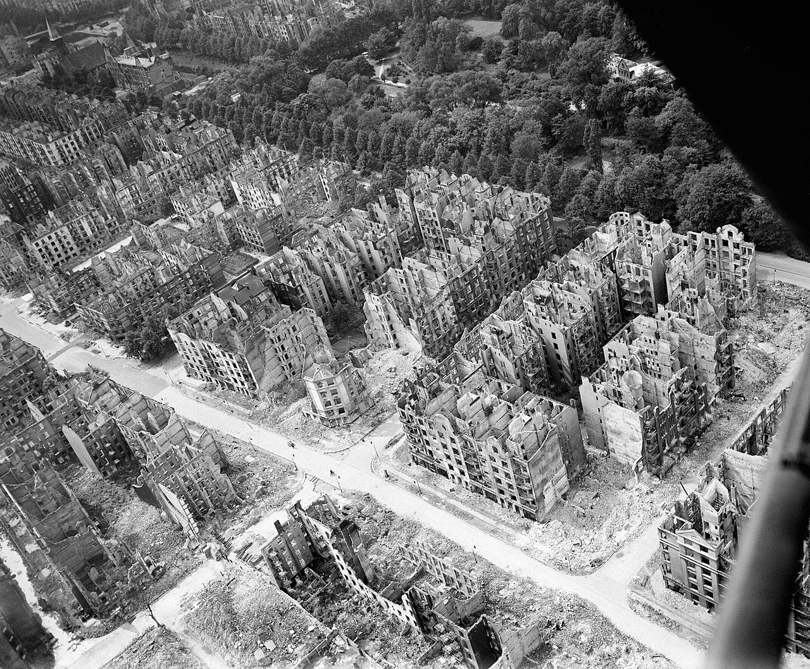
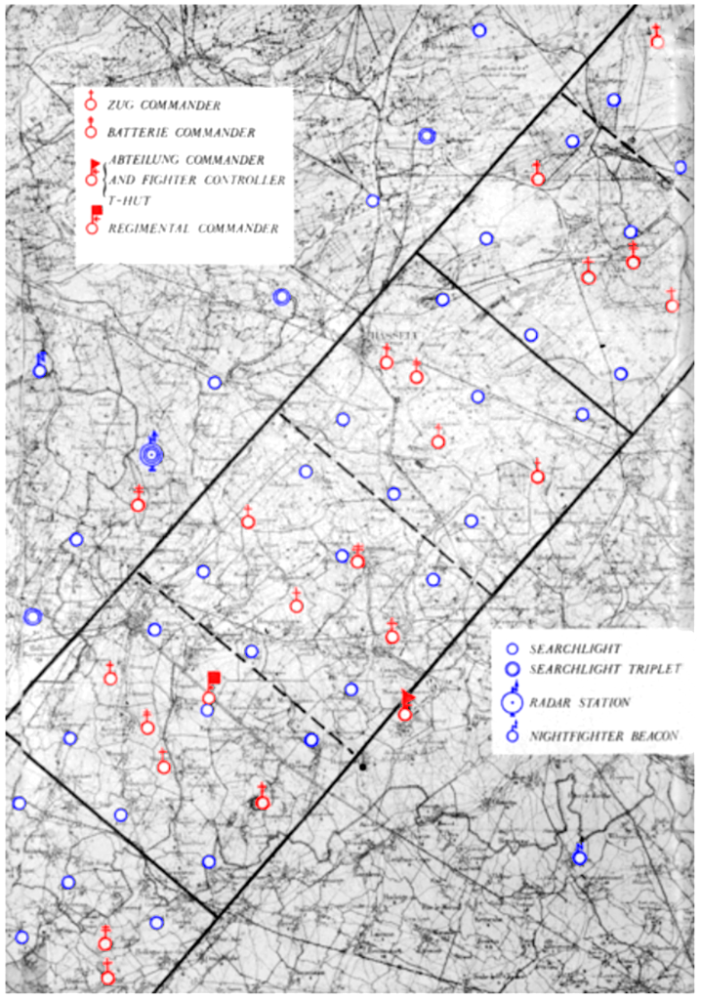
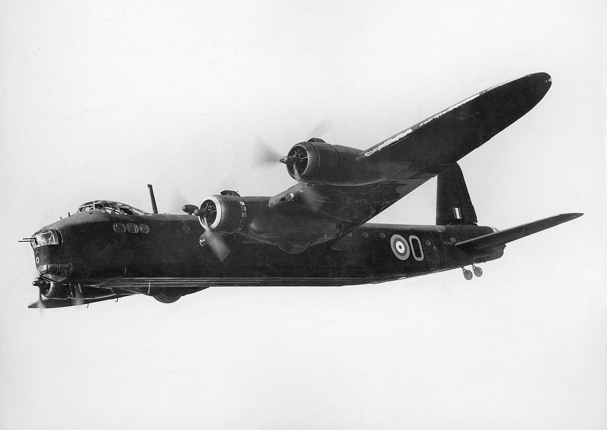
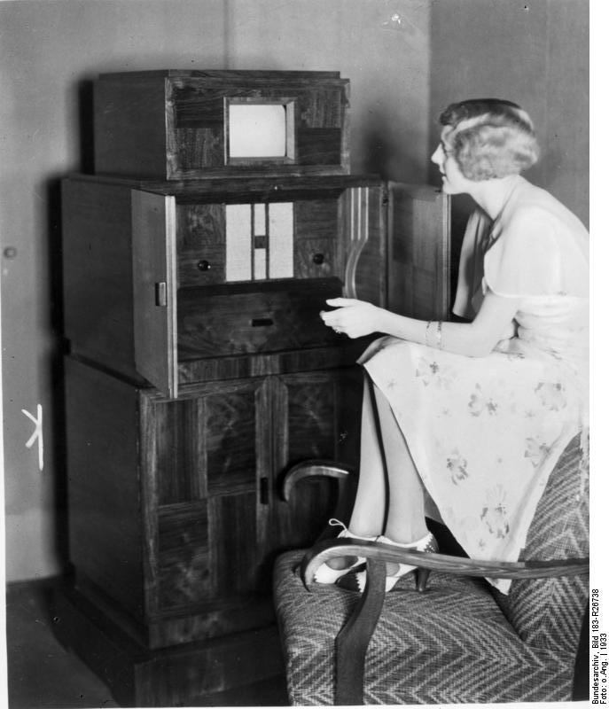
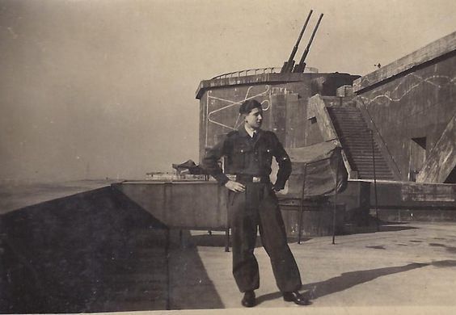
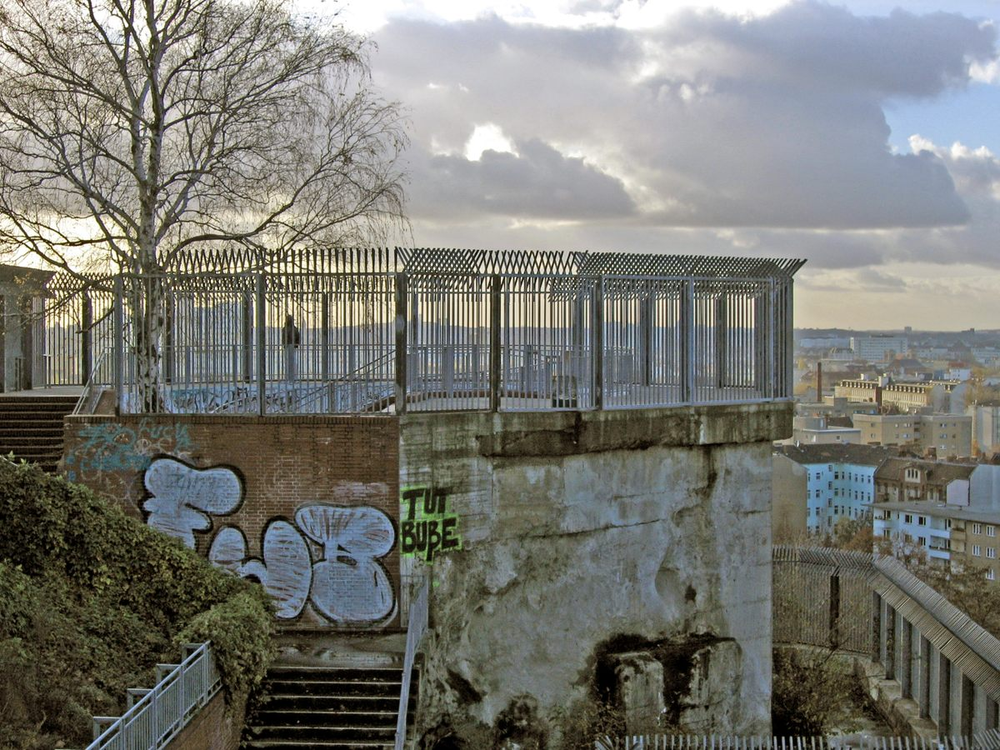

레이더 개발 이야기 (42) - 로테르담에서 온 장치
게시: 2023-08-10T06:30:01+09:00
<최초의 공대지 레이더를 이용한 폭격> 로열 에어포스 폭격기들이 밤길을 못 찾아 여태껏 삽질만 하고 있었다는 것이 폭로된 Butt 보고서 파문 이후, 항법사들의 밤눈이 되어줄 공대지 레이더 H2S에 대한 영국 정부의 기대는 하늘을 찔렀고 그에 비례하여 개발진에 대한 압박도 대단했음. 1942년 7월, 처칠은 직접 10월 중순까지 H2S 레이더 200 세트를 준비해놓으라고 명령하여 레이더 개발팀을 깜놀시킴. 모든 지원이 다 집중되었으나, 결국 이 마감일은 지키지 못함. 1943년 1월까지도 고작 12대의 Stirling 폭격기와 12대의 Halifax 폭격기에만 H2S가 장착됨. 그리고 이들은 당장 실전에 투입됨. 바로 1943년 1월 30일의 함부르크 폭격.

(함부르크 상공의 랭카스터 폭격기. 이 사진이 바로 최초의 H2S를 이용한 폭격이 있었던 1943년 1월 30일~31일 밤에 찍힌 것.)
이 폭격기들은 대규모 폭격기 편대의 선두에서 길잡이 노릇을 하며 먼저 목표물에 소이탄을 투하하는 Path Finder 역할을 수행. 후방에서 따라오는 랭카스터 폭격기 100대는 그로 인한 화재를 목표로 폭탄을 투하. 결과는? H2S를 장착한 Path Finder 폭격기까지 합해 총 148대가 동원된 이 폭격에서 119건의 화재가 발생하여 민간인 58명이 사망하고 164명이 부상을 당함. 로열 에어포스의 피해는 전체의 3.4%에 달하는 5대. H2S로 유도를 했음에도 실망스러울 수준으로 폭탄 투하는 꽤 분산되었으나, '이 정도면 성공적'이라고 폭격기 사령부는 자평.

(앙상한 뼈대만 남긴 함부르크 시내. 이 사진은 저 1943년 1월 폭격의 결과가 아니라 1945년까지 죽어라 폭탄을 퍼부은 결과로서, 이 사진은 종전 이후에 찍은 것. 그래서 거리에 너저분한 잔해가 흩어져 있지 않고 깨끗이 치워진 상태.)
<시작하자마자 그물에 걸리다> 문제는 바로 며칠 뒤인 2월 2일 밤 쾰른을 향한 폭격. 총 161대의 폭격기가 동원된 이 폭격 작전에서, 아직 독일 국경선도 넘기 전인 네덜란드 상공에서 길잡이인 Path Finder 폭격기들이 루프트바페 야간 전투기에게 딱 걸린 것. 이건 단순히 운이 나빴던 것이 아니라, 밤마다 독일을 노리는 로열 에어포스 폭격기들을 사냥하기 위해 루프트바페가 벨기에와 네덜란드 일대에 지상 레이더와 탐조등을 그물처럼 깔아두고 (소위 말하는 Kammhuber 방어선) 뭔가 걸릴 때마다 리히텐슈타인 레이더를 장착한 야간 전투기를 올려보내 요격을 했기 때문. 게다가 이 때 날아오른 독일 조종사 중 하나가 야간 전투기의 에이스인 Hans-Dieter Frank 대위였음.

(캄후버 방어선이란 1940년 7월 독일군의 Josef Kammhuber 대령이 고안한 야간 방공망으로서, 레이더와 탐조등이 체계적으로 배치된 넓은 띠 모양의 방어선을 구축하고 그 지역에 유기적으로 배치된 야간 전투기 편대를 이용하여 적 폭격기를 요격하는 체계.)
(H2S 장착 폭격기를 최초로 격추한 루프트바페의 야간 전투기 에이스 한스-디터 프랑크 대위. 이미 많은 폭격기를 격추하여 에이스 칭호를 달았으나, 몇 달 뒤인 1943년 6월에는 하룻밤에 무려 6대의 영국 폭격기를 격추하여 '하룻밤 에이스'라는 명예 호칭까지 받았음. 그러나 다시 불과 3달 뒤 야간 작전 중 다른 독일 야간 전투기와 공중 충돌하여 24세의 나이로 전사. 총 55대를 격추시켰다고.)
이날 밤 프랑크 대위가 격추시킨 폭격기는 H2S를 장착하고 있던 Stirling 폭격기. 로테르담에 떨어진 스털링의 잔해는 당연히 독일군의 손에 들어갔고, 평상시에는 조심스럽게 다루어도 잘 부서지지만 꼭 이럴 때는 단단하기 그지없는 영국제 물건답게 H2S 레이더는 PPI 디스플레이 장치를 빼고는 거의 부서지지 않은 채 독일군에게 수거됨. 게다가 레이더 기지를 포함한 방공망이 즐비하게 깔려 있던 캄후버 방어선의 일부답게, 로테르담에는 독일군의 레이더 기술자들이 득실거렸음. 이들은 스털링 폭격기에서 수거된 기묘한 전자장비가 범상치 않은 물건이라는 것을 즉각 알아보고 베를린으로 보냄.

(당시 격추된 Stirling 폭격기. Short Brothers 항공사에서 만들었기 때문에 보통 Short Stirling이라고 불림. 1939년 5월 최초 비행을 한 영국 공군의 초기 4발 엔진 폭격기인 스털링 폭격기는 나름 우수한 성능을 냈고 특히 선회력이 좋아서 조종사들의 호평을 받았으나, 최대 상승 고도 등에서 아쉬운 점이 꽤 많아 결국 랭카스터 폭격기와의 경쟁에서 밀려 비교적 일찍 2선 임무로 밀리게 됨. 이는 스털링 설계 당시 영국 공군의 요구 조건이 날개폭이 100피트 (33m)를 넘어서는 안된다고 되어 있었기 때문인 탓이 큰데, 영국 공군이 그런 조건을 내건 것은 장거리 폭격기 만든답시고 지나치게 폭격기를 크게 만드는 것을 막기 위해서였는데, 당시 영국 공군의 기존 격납고 폭이 113피트였다고. 그러나 조금 더 뒤에 개발을 시작한 랭카스터는 그런 제약 조건을 무시하고 설계되었고, 그래서 결국 우위를 차지.) <괴링을 깜놀시킨 로테르담 장치> '로테르담에서 주운 장치'라는 뜻으로 로테르담 거레트(Rotterdam Gerät)라고 명명된 이 요사스러운 영국제 전자 장치는 베를린에서도 비상한 관심을 끔. 격추된지 불과 20일 만인 2월 20일, 독일의 라디오 TV 제조사인 Telefunken 사무실에서 이 로테르담 거레트 관련 회의가 열림.

(사진은 1932년 Telefunken 사가 만든 TV. 텔레풍켄 사는 전후에도 계속 사업을 계속 했는데 1967년에 합병을 통해 결국 해체됨.)
그런데 아직 연구가 제대로 완료되기 전에 3월 1일 밤 251대의 로열 에어포스 폭격기가 동원된 대규모 폭격이 베를린을 덮쳤고, 그 폭탄 중 일부가 텔레풍켄 건물을 때림. 그리고 거짓말처럼 그 소중한 로테르담 거레트를 박살을 내버림. 그런데 운명의 장난인지, 711명의 대규모 사망자를 낸 그날 밤의 폭격에서도 로열 에어포스는 17대의 폭격기를 격추당했는데, 그 잔해 중 하나에서 역시 PPI 디스플레이를 빼고는 거의 멀쩡한 H2S radar가 발견됨. 게다가 이번에는 그 격추된 폭격기에서 낙하산으로 탈출한 승무원들도 생포됨. 독일군은 이들을 심하게 취조하여 이 물건이 지상 지형을 스캔하여 목표물을 찾아주는 레이더라는 것을 알아냄. 독일도 이미 자체 기술로 레이더를 만든 전파 기술 강국. 독일제 브라운관에 이 H2S 레이더 셋을 연결하여 테스트를 해보기로 함. 다만 항공기에 이걸 장착하는 것은 기술적으로 시간도 많이 걸리는 일이므로 베를린 한복판에 있는 훔볼트하인(Humboldthain) 고사포탑 (flak tower) 꼭대기에서 이 레이더를 테스트해봄. 결과는 독일 기술진의 입을 떡 벌어지게 만듬. 베를린 시내의 건물 스카이라인이 그대로 보임. 괴링도 이 결과물을 보고 충격을 받았을 정도.
 
(훔볼트하인 고사포탑은 베를린 북부에 있는 공원에 만든 거대한 고사포탑 건물. 물론 훔볼트하인 공원은 18세기 프로이센의 스타 학자인 훔볼트의 이름을 딴 공원.)
이제 로열 에어포스가 어떤 기술을 쓰는지 알았으니 독일도 그 대응책을 마련할 순서. 과연 처웰 경이 두려워했던 결과가 나왔을까?